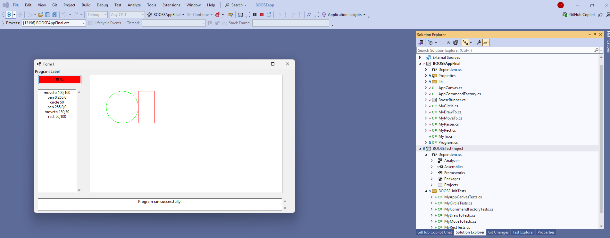

BOOSE Project Documentation
Welcome to the official documentation for the BOOSE assignment.
This site provides guides, test references, and a full API overview.
🚀 Getting Started 🚀
- Learn how to set up the project
- Explore the main features
- Run your first build with DocFX
🧪 Tests 🧪
The project includes a suite of unit tests to ensure clarity, maintainability, and correctness.
MyAppCanvasTests
Validates canvas initialization, rendering consistency, and state management.MyCommandFactoryTests
Ensures command creation, parsing, and factory logic behave as expected.MyCircleTests
Verifies circle rendering, including boundary conditions and drawing accuracy.MyRectTests
Tests rectangle drawing logic, focusing on validation and error handling.MyMoveToTests
Confirms movement logic, ensuring coordinates update correctly and invalid moves are handled.MyDrawToTests
Covers custom drawing behaviour, validating path creation and rendering consistency.
📖 API Reference 📖
Dive into the technical details of classes and namespaces:
AppCanvas– rendering surfaceBooseRunner– execution engineMyCircle,MyRect,MyMoveTo,MyDrawTo– custom drawing commands
🖼️ BOOSE Drawing Output 🖼️
PLEASE CLICK ON THE IMAGE TO ENLARGE!
These examples demonstrate how BOOSE commands are rendered on the custom AppCanvas.
🎯 Restricted Drawing Output 🎯
🎯 Unrestricted Drawing Output 🎯

📚 Additional Resources 📚
Use the sidebar to navigate through guides, tests, and API documentation.